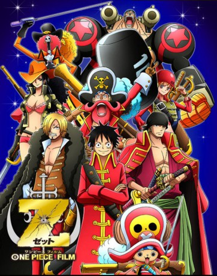

#856 One Piece - Movie 11 - Film Z
 
 IMDB-Wertung: 8.0 / 10
IMDB-Wertung: 8.0 / 10  Metascore: 0
Metascore: 0 
Der ehemalige Marineadmiral Zephyr - nun bekannt als Z - plant mit seiner Neo Marine und den von der Marine gestohlenen Dyna-Steinen die Neue Welt zu zerstören und damit dem Piratenzeitalter ein Ende zu setzen. Dabei stößt er auch auf die Strohhut-Bande, die in einem harten Gefecht auf ihn und seine Männer stoßen. Auch das Marinehauptquartier wird aktiv und versucht alles den ehemaligen Lehrmeister vieler seiner Soldaten aufzuhalten. OPwiki.org
Jahr: 2012
Dauer: 108 Minuten
FSK:
Land: Japan Studio: Toei CompanyTonspuren: DTS - ,
Untertitel: Deutsch,
Auflösung: 1080p (1920x1080) Größe: 7403 MB
Genre: Animation/Trick, Action, Abenteuer, Fantasy
Regisseur: Tatsuya Nagamine
Drehbuch: Eiichiro Oda, Osamu Suzuki
Soundtrack: Kôhei Tanaka
Darsteller:
Datei: X:\Kinder Anime\One Piece\One Piece Movies\One Piece - Movie 11 - Film Z (2012, FSK, 1920x1080).mkv seit 08.04.2015
Festplatte: Kinder-Filme+Trick
 Es gibt insgesamt 19 Filme in der Gruppe 'Kinder Anime\One Piece\One Piece Movies'
Es gibt insgesamt 19 Filme in der Gruppe 'Kinder Anime\One Piece\One Piece Movies'